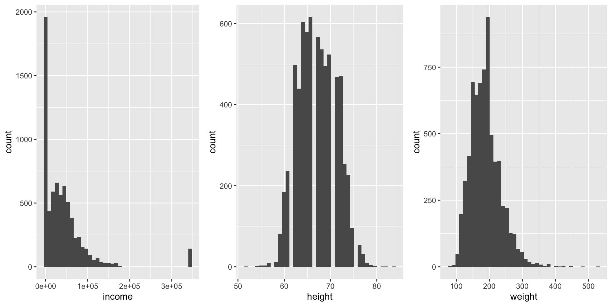
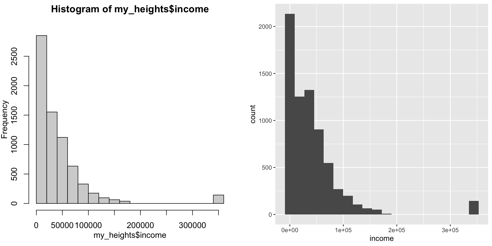
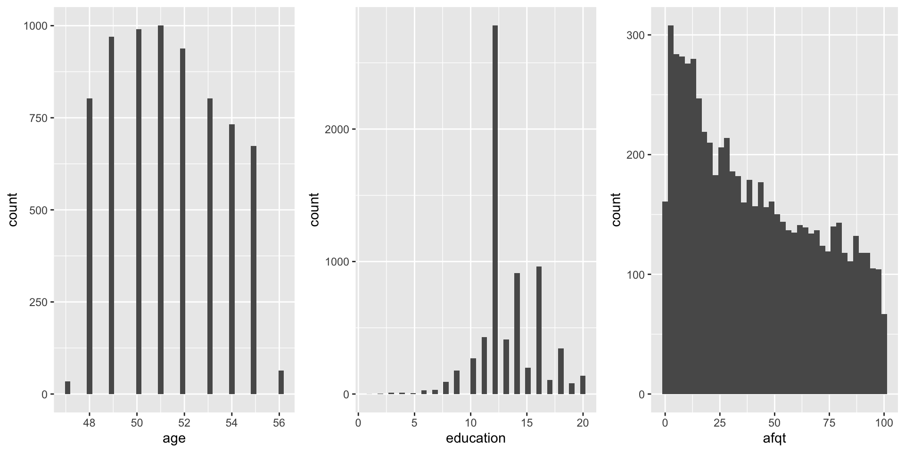
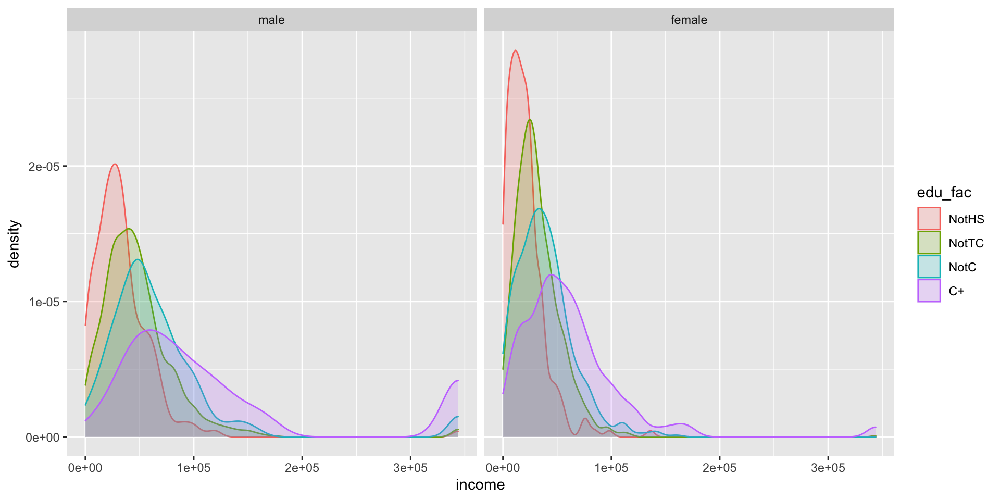
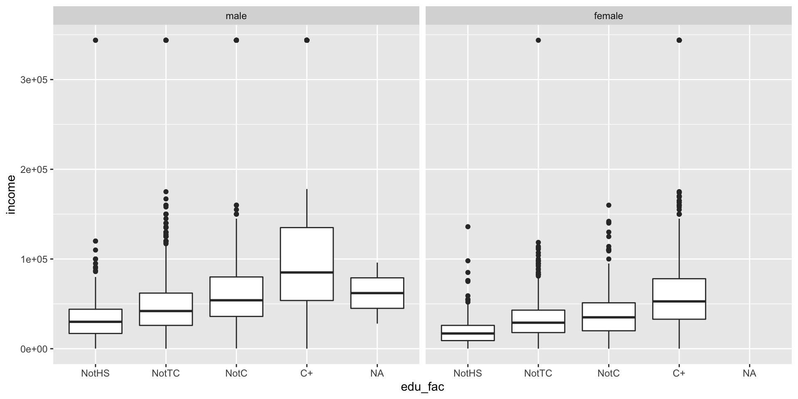
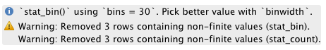
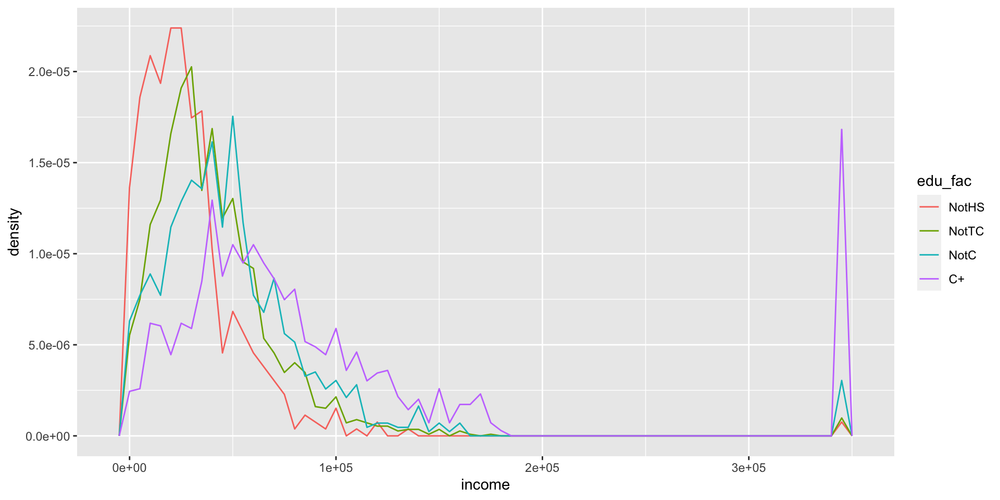
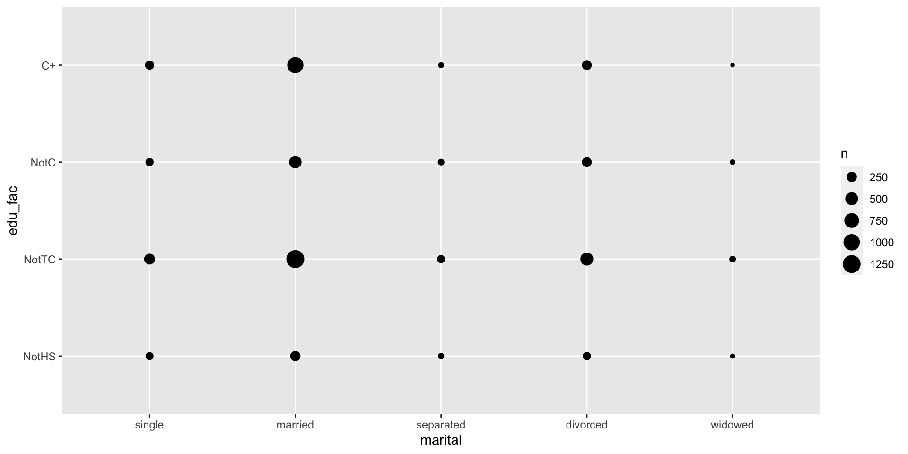
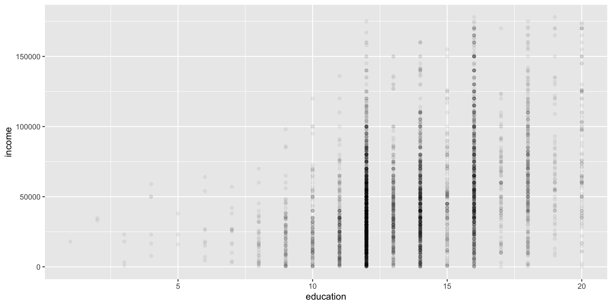
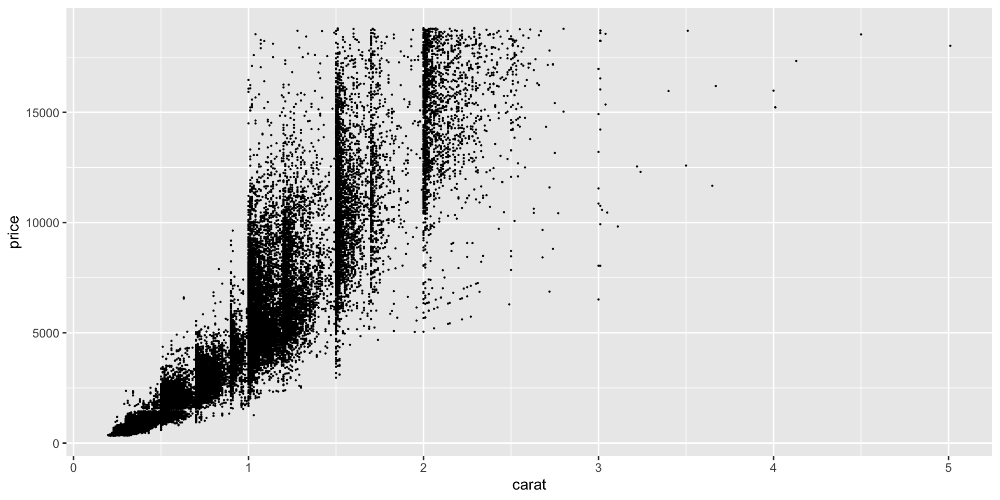

Exploratory Data Analysis (EDA)
ag@hvl.no
Packages used
Generate References for Packages used
Chapter 6; Workflow
- Not all to relevant for us since we use Quarto Documents,
- but some important points
- Cmd + Return/Ctrl + Enter runs current statement and jumps to next statement
- Selecting some statements and hitting Cmd + Return/Ctrl + Enter will run the selected statements.
- Nice for debugging pipes
- Be very careful when you select the statements
- Missing a ‘)’ or a ‘“’ can bring a lot of hurt.
- If sh*t happens, ESC is your best friend
Exploratory Data Analysis (r4ds chap. 7)
General reflection up on the concept of Exploratory Data Analysis. You will find details and more code in chapter 7 of r4ds.
- Getting to know your data
- Variation in variables
- Variation between variables
Some definitions
- Variable: some quality of the underlying phenomenon that one can measure
- Value: the recorded number or category resulting from the measurement
- Observation: a set of measurements of the underlying phenomenon
- same time
- same object
- Tabular data Listing of variables, observations and values
- Tidy tabular data: Tabular data where
- each variable is in a column,
- each observation in a row and
- each cell in the table contains one value
Single variable, load data
- Load the data
Code
income height weight age marital sex education afqt
0 0 95 0 0 0 10 262 - or
Single variable, load data cont.
- Nicer solution
Code
income height weight age marital sex education afqt
0 0 95 0 0 0 10 262 - or
Descriptive Statistics
Describe data by tables showing:
- Different statistics (characteristics) of the data
Number of obs.
Number of missing values
Minimum value
Maximum value
Mean
Dispersion
Standard deviation
Variance
Percentiles
Descriptive Statistics ex. my_heights
- Splits variables into two tables
Code
| Variable | N | Mean | Std. Dev. | Min | Pctl. 25 | Pctl. 75 | Max |
|---|---|---|---|---|---|---|---|
| income | 7006 | 41203.938 | 55892.117 | 0 | 165.5 | 55000 | 343830 |
| height | 7006 | 67.104 | 4.082 | 52 | 64 | 70 | 84 |
| weight | 6911 | 188.304 | 44.473 | 76 | 157 | 212 | 524 |
| age | 7006 | 51.325 | 2.235 | 47 | 49 | 53 | 56 |
| education | 6996 | 13.218 | 2.6 | 1 | 12 | 15 | 20 |
| afqt | 6744 | 41.211 | 29.031 | 0 | 15.115 | 65.235 | 100 |
Descriptive Statistics ex. my_heights
Descriptive Statistics ex. my_heights
| Variable | N | Percent |
|---|---|---|
| marital | 7006 | |
| ... single | 1124 | 16% |
| ... married | 3806 | 54.3% |
| ... separated | 366 | 5.2% |
| ... divorced | 1549 | 22.1% |
| ... widowed | 161 | 2.3% |
| sex | 7006 | |
| ... male | 3402 | 48.6% |
| ... female | 3604 | 51.4% |
Descriptive Statistics ex. my_heights
sex |
male |
female |
||||
|---|---|---|---|---|---|---|
| Variable | N | Mean | SD | N | Mean | SD |
| income | 3402 | 53510.056 | 69399.058 | 3604 | 29587.564 | 35346.899 |
| height | 3402 | 70.106 | 2.993 | 3604 | 64.271 | 2.723 |
| weight | 3392 | 204.134 | 40.727 | 3519 | 173.046 | 42.562 |
| age | 3402 | 51.275 | 2.224 | 3604 | 51.373 | 2.245 |
| education | 3396 | 13.053 | 2.565 | 3600 | 13.374 | 2.623 |
| afqt | 3248 | 41.876 | 29.78 | 3496 | 40.594 | 28.309 |
Descriptive Statistics ex. my_heights
Code
married |
No |
Yes |
||||
|---|---|---|---|---|---|---|
| Variable | N | Mean | SD | N | Mean | SD |
| income | 1703 | 26682.337 | 30962.112 | 1901 | 32190.195 | 38680.357 |
| height | 1703 | 64.197 | 2.785 | 1901 | 64.338 | 2.665 |
| weight | 1662 | 177.223 | 45.254 | 1857 | 169.307 | 39.64 |
| age | 1703 | 51.36 | 2.267 | 1901 | 51.384 | 2.225 |
| education | 1701 | 13.018 | 2.559 | 1899 | 13.694 | 2.638 |
| afqt | 1647 | 33.119 | 26.169 | 1849 | 47.251 | 28.486 |
Descriptive Statistics ex. my_heights
Code
married |
No |
Yes |
||||
|---|---|---|---|---|---|---|
| Variable | N | Mean | SD | N | Mean | SD |
| income | 1497 | 32122.171 | 50519.952 | 1905 | 70317.228 | 77170.587 |
| height | 1497 | 69.835 | 3.082 | 1905 | 70.318 | 2.904 |
| weight | 1492 | 200.097 | 41.932 | 1900 | 207.304 | 39.478 |
| age | 1497 | 51.164 | 2.161 | 1905 | 51.362 | 2.269 |
| education | 1494 | 12.434 | 2.244 | 1902 | 13.539 | 2.695 |
| afqt | 1426 | 34.076 | 27.893 | 1822 | 47.981 | 29.792 |
Single variable graphical description, bar chart
- Simplest, bar-chart
Single variable graphical description, bar chart
The peaks?
- What is the reason behind the peak at 12 years?
- High-school
- What is the reason behind the peak at 14 years?
- 2 year trade college
- What is the reason behind the peak at 16 years?
- 4 year college
Single variable, i.e. variation in a variable
- Example: How does income vary in the
modelr::heightsdataset?- Does someone have zero income?
- How to display the variable? > - histogram;
hist(my_df$var_name, breaks = 20)orgeom_histogram()from ggplot > - density/violin plot
- Be aware of outliers?
- Might be difficult to spot in a histogram
hist() and geom_histogram()
geom_histogram() other variables
Code
hist3 <- ggplot(my_heights, mapping = aes(x = income)) +
geom_histogram(bins = 40, na.rm = TRUE)
hist4 <- ggplot(my_heights, mapping = aes(x = height)) +
geom_histogram(bins = 40, na.rm = TRUE)
hist5 <- ggplot(my_heights, mapping = aes(x = weight)) +
geom_histogram(bins = 40, na.rm = TRUE)
gridExtra::grid.arrange(hist3, hist4, hist5, nrow = 1)geom_histogram() other variables
geom_histogram() other variables
Code
hist6 <- ggplot(my_heights, mapping = aes(x = age)) +
geom_histogram(bins = 40, na.rm = TRUE)
hist7 <- ggplot(my_heights, mapping = aes(x = education)) +
geom_histogram(bins = 40, na.rm = TRUE)
hist8 <- ggplot(my_heights, mapping = aes(x = afqt)) +
geom_histogram(bins = 40, na.rm = TRUE)
gridExtra::grid.arrange(hist6, hist7, hist8, nrow = 1)geom_histogram() other variables

Variation in a variable, given another variable
- We can use the facet feature of
ggplot
geom_density(); faceted on sex
- Distribution of income
- Three levels of education ([0-12) “NotHS”, [12-14) “NotTC”, [14-16) “NotC”, [16-21] “C+”)
- Faceted on the
sexvariable - Use the
cutfunction to make the categories - Have to use
right = FALSEto get open interval on the right
geom_density(); faceted on sex
Code
my_heights %>%
mutate(
edu_fac = cut(education,
breaks = c(0, 12, 14, 16, 21),
labels = c("NotHS", "NotTC", "NotC", "C+"),
right = FALSE)
) %>%
filter(!is.na(edu_fac) & income > 0) %>%
ggplot(mapping = aes(x = income, fill = edu_fac, colour = edu_fac)) +
geom_density(alpha = 0.2, na.rm = TRUE) +
facet_wrap(~sex)geom_density(); faceted on sex
geom_density(); facet edu_fac
- Perhaps better to facet on education
Code
my_heights %>%
mutate(
edu_fac = cut(education,
breaks = c(0, 12, 14, 16, 21),
labels = c("NotHS", "NotTC", "NotC", "C+"),
right = FALSE)
) %>%
filter(!is.na(edu_fac) & income > 0) %>%
ggplot(mapping = aes(x = income, fill = sex, colour = sex)) +
geom_density(alpha = 0.2, na.rm = TRUE) +
facet_wrap(~edu_fac)geom_density(); facet edu_fac
Income equal to 0?
Income equal to 0?
Income equal to 0?
- No income, grouped by sex and edu_fac
Boxplot
Boxplot
Boxplot code, turned 90
Boxplot plot, turned 90
How to treat bad data
- Outliers?
- Real outliers or faulty registration?
- What to do?
To just delete the observation is seldom the right solution
Document what you do!
If you suspect faulty data entry/registration change value to NA
How to treat bad data cont.
- What to do? cont.
In some rare cases it might be acceptable to edit the data
if you have very few observations
can give a very plausible explanation for the faulty entry. Document very carefully.
Ex. percentage unemployed timeseries: 2,3%, 3,7% … 270% … 4,1%.
- If you can argue that 2,7 probably has been entered instead of 0,027 it might be defensible to edit the observation, but normally you should change it to NA and document your edit.
Do not use
na.rm = TRUEinggplotbefore last edit.Make sure that you have thoroughly documented the missing values.
ggplotis nice and warns you about missing values and tells you how many there are.
How to treat bad data cont.
- With real outliers
- Explanation. Is there a missing variable?
- Do the analysis with and without the outliers. If similar results not to much of a problem, if not …
Quiz
From r4ds. Use help (?)
- How are NAs handled in
geom_histogram()? - How are NAs handled in
geom_bar()? - How are NAs handled in
sumandmean
Answer Quiz
Code
set.seed(999)
my_data <- tibble(val = c(round(runif(97, 1, 10), 0), rep(NA, 3)))
g <- ggplot(my_data, mapping = aes(x = val))
g1 <- g + geom_histogram()
g2 <- g + geom_bar()
gridExtra::grid.arrange(g1, g2, ncol = 2)
sum(my_data$val); mean(my_data$val)
sum(my_data$val, na.rm = TRUE); mean(my_data$val, na.rm = TRUE)Answer Quiz

Answer Quiz
Warnings about NAs from ggplot.
Answer Quiz
- Using
na.rm = TRUE.
Code
set.seed(999)
my_data <- tibble(val = c(round(runif(97, 1, 10), 0), rep(NA, 3)))
g <- ggplot(my_data, mapping = aes(x = val))
g1 <- g + geom_histogram(binwidth = 1, na.rm = TRUE)
g2 <- g + geom_bar(na.rm = TRUE)
gridExtra::grid.arrange(g1, g2, ncol = 2)
sum(my_data$val); mean(my_data$val)
sum(my_data$val, na.rm = TRUE); mean(my_data$val, na.rm = TRUE)Answer Quiz

Answer Quiz
- Now the two seems handle NAs the same way.
- Normal rule: One NA => result NA
- For
sum()andmean()na.rm = TRUEreturns the result of the calculation when NAs are removed
Covariation
- Use facets as above
- Some cases
- Categorical and continuous variable
- Two categorial variables
- Two continuous variables
Categorical and continuous variable
geom_freqpoly()- Lines, category by colour or linetype (BW)
- Default gives count, density often better
Categorical and continuous variable; code
Code
my_heights %>%
mutate(
edu_fac = cut(education,
breaks = c(0, 12, 14, 16, 21),
labels = c("NotHS", "NotTC", "NotC", "C+"),
right = FALSE)
) %>%
filter(income > 0 & !is.na(weight) & !is.na(afqt) & !is.na(edu_fac)) %>%
ggplot(mapping = aes(x = income, y = ..density..)) +
geom_freqpoly(mapping = aes(colour = edu_fac), binwidth = 10000)- Try also
binwidth = 3000
Categorical and continuous variable; plot
Two categorical variable; code
Two categorical variable; plot
One continuouse variable, one with many categories
One continuouse variable, one with many categories
Two continuous variables
- Use
diamondsdataset - Smaller point size
Two continuous variables
Two continuous variables; alpha
Two continuous variables; alpha

Two continuous variables; make one categorical
Two continuous variables; make one categorical
- Not like the one in r4ds
